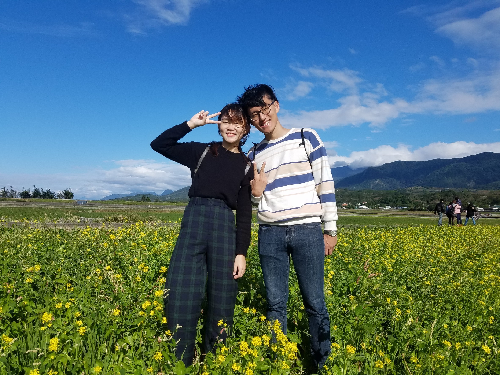
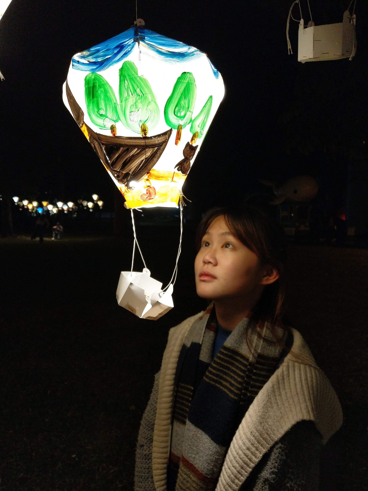

沒有城市的塵囂喧鬧
沒有川流不息
沒有煙花
倒數完的那刻
撒上滿空願望與幸福
2018-12-30
@大波池
舒服的溫度和空氣
忍不住就想
牽妳，抱妳，吻妳，擁有妳
2018-12-30
@伯朗大道
遠遠的中央山脈
滿滿的油菜花
甜甜的妳

2018-12-30
@金城武樹
只是一棵普通的樹啊
那我們就來找一棵枇杷膏樹吧
Fuck!好多螞蟻
2018-12-31
@大池豆包豆皮豆漿店
幾點了啊?還好啦還早
40分鐘了诶，啊豆皮好吃ㄇ
出發下一站囉
2018-12-31
@台東森林公園
騎好久好久的車
诶幫我錄聲音，拜託
我要交作業
2018-12-31
@鐵花村音樂聚落
手笛，打鼓，特技
跨年台東最熱鬧的地方
雨輕敲著2018的尾聲
微冷，臉細細鋪上一層濛濛水氣
妳說這是小時候常聽的歌
3...2...1...
新年快樂

2019-01-01
@史前文化博物館
去博物館學騎車的啦
你都不會想騎看看ㄇ
@小野柳
這裡海風真的有夠大
@普悠瑪
娃，沒有買到回程票